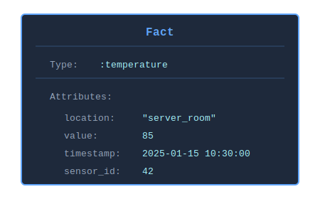
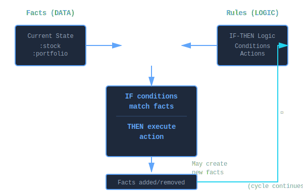

What is a Fact?¶
A fact is the fundamental unit of knowledge in KBS - a piece of information about your domain that the system can reason about. Facts are the "data" on which rules operate.
Core Concept¶
Think of a fact as a typed data record that represents something true at a particular moment:
- "The temperature in the server room is 85°F"
- "Stock AAPL is trading at $150.25 with volume 1.2M"
- "Sensor #42 is active"
- "Order #123 is pending"
Each fact has:
- Type - What kind of thing this is (
:temperature,:stock,:sensor,:order) - Attributes - Key-value pairs describing it (
location: "server_room",value: 85)
Anatomy of a Fact¶
Structure¶
fact = KBS::Fact.new(:temperature, location: "server_room", value: 85)
fact.type # => :temperature
fact.attributes # => {:location => "server_room", :value => 85}
fact[:location] # => "server_room"
fact[:value] # => 85
Visual Representation¶

A fact consists of a type symbol and a hash of attribute key-value pairs.
How Facts Differ from Other Data Structures¶
| Aspect | Fact | Plain Hash | Database Row | Object |
|---|---|---|---|---|
| Type | Explicit (:temperature) |
None | Table name | Class |
| Pattern Matching | Built-in | Manual | SQL WHERE | Manual |
| Identity | By content & type | By reference | By primary key | By reference |
| Purpose | Reasoning & inference | General storage | Persistent storage | Behavior + data |
| Lifecycle | Add/retract from KB | Create/destroy | Insert/delete | New/GC |
Example Comparison:
# Plain Hash
data = { location: "server_room", value: 85 }
# What kind of data is this? No way to tell.
# Database Row
# SELECT * FROM temperatures WHERE location = 'server_room'
# Requires SQL, separate from logic
# Object
class Temperature
attr_accessor :location, :value
end
temp = Temperature.new
# Has behavior but no built-in pattern matching
# Fact
fact = KBS::Fact.new(:temperature, location: "server_room", value: 85)
# Self-describing, pattern-matchable, inference-ready
Fact Lifecycle¶
1. Creation¶
Facts are created and added to a knowledge base:
# In-memory knowledge base
kb = KBS.knowledge_base do
fact :temperature, location: "server_room", value: 85
end
# Blackboard (persistent)
engine = KBS::Blackboard::Engine.new(db_path: 'kb.db')
fact = engine.add_fact(:temperature, location: "server_room", value: 85)
2. Pattern Matching¶
Once added, facts are automatically matched against rule patterns:
rule "high_temperature" do
# This pattern matches our fact above
on :temperature, location: "server_room", value: greater_than(80)
perform { puts "Alert!" }
end
3. Rule Firing¶
When all conditions of a rule match, the rule fires:
4. Updates (Blackboard Only)¶
Persistent facts can be updated:
fact[:value] = 90 # Update persisted immediately
fact.update(value: 90, timestamp: Time.now) # Bulk update
Note: Updates do NOT trigger rule re-evaluation. To re-trigger rules, retract and re-add.
5. Retraction¶
Facts can be removed from working memory:
Fact Types (Implementations)¶
KBS provides two fact implementations:
1. Transient Facts (KBS::Fact)¶
- Used by: In-memory knowledge bases
- Identity: Ruby object ID
- Persistence: None (lost on process exit)
- Performance: Fast (no I/O)
fact = KBS::Fact.new(:temperature, value: 85)
puts fact.id # => 70123456789012 (Ruby object ID)
# Lightweight, perfect for short-lived reasoning
kb = KBS.knowledge_base do
fact :stock, symbol: "AAPL", price: 150
run
end
# Facts disappear when kb goes out of scope
Best for:
- Event stream processing
- Short-lived analyses
- Prototyping and testing
- When restart durability isn't needed
2. Persistent Facts (KBS::Blackboard::Fact)¶
- Used by: Blackboard knowledge bases
- Identity: UUID (stable across restarts)
- Persistence: SQLite, Redis, or Hybrid storage
- Audit Trail: Complete change history
- Performance: Slower (I/O overhead)
engine = KBS::Blackboard::Engine.new(db_path: 'kb.db')
fact = engine.add_fact(:temperature, value: 85)
puts fact.uuid # => "550e8400-e29b-41d4-a716-446655440000"
# Update persists
fact[:value] = 90
# Restart process
engine2 = KBS::Blackboard::Engine.new(db_path: 'kb.db')
reloaded = engine2.blackboard.get_facts_by_type(:temperature).first
puts reloaded[:value] # => 90 (persisted)
Best for:
- Long-running systems
- Multi-agent coordination
- Audit requirements
- Systems that must survive restarts
- Distributed reasoning
Pattern Matching¶
Facts excel at pattern matching—the ability to find facts that satisfy specific criteria.
Literal Matching¶
Match exact values:
fact = KBS::Fact.new(:stock, symbol: "AAPL", price: 150.25)
# Matches
fact.matches?(type: :stock, symbol: "AAPL") # => true
# Doesn't match
fact.matches?(type: :stock, symbol: "GOOGL") # => false
Predicate Matching¶
Match with lambda conditions:
fact = KBS::Fact.new(:temperature, value: 85)
# Matches
fact.matches?(type: :temperature, value: ->(v) { v > 80 }) # => true
fact.matches?(type: :temperature, value: ->(v) { v < 100 }) # => true
# Doesn't match
fact.matches?(type: :temperature, value: ->(v) { v > 90 }) # => false
Variable Binding¶
Capture values for use in rule actions:
rule "report_temperature" do
on :temperature, location: :loc?, value: :temp?
# ^^^^^^ ^^^^^^
# Variables (end with ?)
perform do |facts, bindings|
# bindings contains captured values
puts "#{bindings[:loc?]}: #{bindings[:temp?]}°F"
end
end
# Add fact
fact :temperature, location: "server_room", value: 85
run # → "server_room: 85°F"
Join Tests¶
Variables create joins across multiple facts:
rule "inventory_check" do
on :order, product_id: :pid?, quantity: :qty?
on :inventory, product_id: :pid?, available: :avail?
# ^^^^^^
# Same variable = JOIN condition
perform do |facts, bindings|
# Only fires when BOTH facts have same product_id
if bindings[:avail?] < bindings[:qty?]
puts "Insufficient inventory for #{bindings[:pid?]}"
end
end
end
Common Fact Patterns¶
1. Entity Facts¶
Represent domain objects:
fact :customer, id: 12345, name: "Acme Corp", tier: "gold"
fact :product, sku: "ABC-123", price: 49.99, in_stock: true
fact :order, id: 789, customer_id: 12345, total: 499.90
2. Event Facts¶
Represent things that happened:
fact :order_placed, order_id: 789, timestamp: Time.now
fact :payment_received, order_id: 789, amount: 499.90
fact :item_shipped, tracking: "1Z999", order_id: 789
3. Sensor Facts¶
Real-time measurements:
fact :temperature, sensor_id: 42, value: 85, timestamp: Time.now
fact :pressure, sensor_id: 43, value: 14.7, unit: "psi"
fact :motion_detected, camera_id: 5, location: "entrance"
4. State Facts¶
Current system state:
fact :connection, server: "db-1", status: "active"
fact :worker, id: 3, status: "busy", task_id: 456
fact :cache, key: "user:123", valid_until: Time.now + 3600
5. Derived Facts¶
Facts inferred from other facts:
rule "derive_alert" do
on :temperature, value: greater_than(80), location: :loc?
without :alert, location: :loc? # No existing alert
perform do |facts, bindings|
# Add derived fact
fact :alert,
location: bindings[:loc?],
level: "high",
source: "temperature_monitor"
end
end
6. Flag Facts¶
Boolean markers (attributes optional):
fact :system_ready
fact :maintenance_mode
fact :debug_enabled
fact :cache_warmed
# Used in rules
rule "process_requests" do
on :system_ready
without :maintenance_mode
on :request, id: :req_id?
perform { |facts, b| handle_request(b[:req_id?]) }
end
Fact vs. Rule Relationship¶
Facts and rules work together in a symbiotic relationship:

Facts (data) and rules (logic) interact through pattern matching: rules match facts, execute actions, and may create new facts, continuing the inference cycle.
Example:
# FACTS represent the current state
fact :stock, symbol: "AAPL", price: 150, volume: 1_000_000
fact :portfolio, cash: 10_000, max_position: 5_000
# RULES define logic
rule "momentum_buy" do
# IF these facts exist with these patterns...
on :stock, symbol: :sym?, price: :price?, volume: greater_than(500_000)
on :portfolio, cash: :cash?, max_position: :max?
# THEN execute this action
perform do |facts, bindings|
position_size = [bindings[:max?], bindings[:cash?] * 0.1].min
shares = (position_size / bindings[:price?]).floor
if shares > 0
# Action may create new facts
fact :order,
symbol: bindings[:sym?],
shares: shares,
type: "market_buy"
end
end
end
Fact Semantics¶
Open World Assumption¶
Facts can have any attributes. Patterns only constrain what they mention:
# Fact has 4 attributes
fact = KBS::Fact.new(:stock,
symbol: "AAPL",
price: 150,
volume: 1_000_000,
exchange: "NASDAQ"
)
# Pattern only constrains 2 - still matches!
fact.matches?(type: :stock, symbol: "AAPL") # => true
Closed Attribute Assumption¶
If a pattern requires an attribute, the fact must have it:
fact = KBS::Fact.new(:stock, symbol: "AAPL", price: 150)
# No :volume attribute
# Fails - fact missing required :volume
fact.matches?(type: :stock, volume: greater_than(1000)) # => false
Type Safety¶
Type is always checked first:
fact = KBS::Fact.new(:stock, symbol: "AAPL")
# Fails immediately - wrong type
fact.matches?(type: :temperature) # => false
# Succeeds - right type
fact.matches?(type: :stock) # => true
Value Immutability (Transient Facts)¶
Transient facts should be treated as immutable. Changing attributes doesn't trigger re-evaluation:
fact = KBS::Fact.new(:temperature, value: 85)
engine.add_fact(fact)
# Don't do this - change not tracked
fact[:value] = 90 # Rules won't re-fire
# Instead, retract and re-add
engine.remove_fact(fact)
new_fact = KBS::Fact.new(:temperature, value: 90)
engine.add_fact(new_fact)
Value Mutability (Persistent Facts)¶
Persistent facts track updates but don't re-trigger rules:
fact = engine.add_fact(:temperature, value: 85)
# This persists but doesn't re-fire rules
fact[:value] = 90
# To re-trigger rules, retract and re-add
fact.retract
new_fact = engine.add_fact(:temperature, value: 90)
Performance Considerations¶
Fact Count Impact¶
- RETE strength: Efficient with many facts and stable rules
- Alpha memories: Facts indexed by type
- Beta network: Partial matches cached as tokens
- Unlinking: Empty nodes deactivated automatically
Scaling characteristics:
- 10-1,000 facts: Excellent performance
- 1,000-10,000 facts: Very good (alpha memory indexing helps)
- 10,000-100,000 facts: Good (consider indexing strategies)
- 100,000+ facts: Consider domain-specific optimizations
Attribute Count Impact¶
Facts can have any number of attributes:
# Small fact (fast)
fact :flag, active: true
# Medium fact (typical)
fact :order,
id: 123,
customer_id: 456,
total: 99.99,
status: "pending"
# Large fact (fine, but consider if all attributes needed)
fact :trade,
symbol: "AAPL",
price: 150.25,
volume: 1000,
timestamp: Time.now,
order_id: 789,
account_id: 456,
commission: 1.50,
exchange: "NASDAQ",
# ... 20 more attributes
Guideline: Include attributes you'll pattern match on. Store auxiliary data in external systems if not needed for rules.
Pattern Complexity Impact¶
# Fast - literal match (hash equality)
on :stock, symbol: "AAPL"
# Medium - simple predicate
on :stock, price: ->(p) { p > 100 }
# Slow - complex predicate (runs on every match attempt)
on :stock, price: ->(p) {
historical_data = fetch_history(p) # External call!
calculate_volatility(historical_data) > threshold
}
Guideline: Keep predicates simple. Do expensive checks in rule actions, not patterns.
Common Pitfalls¶
1. Forgetting Fact Type¶
# Wrong - no type
fact = { location: "server_room", value: 85 }
# Right - always include type
fact :temperature, location: "server_room", value: 85
2. Expecting Updates to Re-trigger Rules¶
fact = engine.add_fact(:temperature, value: 85)
# This rule fires
rule "high_temp" do
on :temperature, value: greater_than(80)
perform { puts "High!" }
end
# Update doesn't re-fire rule
fact[:value] = 90 # Rule doesn't fire again
# Must retract and re-add to re-trigger
fact.retract
engine.add_fact(:temperature, value: 90)
engine.run # Now rule fires
3. Side Effects in Predicates¶
# Wrong - side effects
counter = 0
on :stock, price: ->(p) {
counter += 1 # Bad! Runs on every match attempt
p > 100
}
# Right - pure predicate
threshold = 100
on :stock, price: ->(p) { p > threshold }
4. Missing Attributes in Predicates¶
fact = KBS::Fact.new(:stock, symbol: "AAPL") # No :price
# Fails - predicate can't evaluate nil
fact.matches?(type: :stock, price: ->(p) { p > 100 }) # => false
# Use variable to capture nil
fact.matches?(type: :stock, price: :price?) # => true (binds :price? => nil)
5. Confusing Negation¶
# Matches when NO critical alert EXISTS
without :alert, level: "critical"
# NOT the same as: Match alerts that aren't critical
# For that, use:
on :alert, level: ->(l) { l != "critical" }
Best Practices¶
1. Use Descriptive Fact Types¶
# Good - clear semantic meaning
fact :temperature_reading, sensor_id: 42, value: 85
fact :order_placed, order_id: 123, timestamp: Time.now
fact :inventory_shortage, product_id: "ABC", deficit: 50
# Avoid - vague types
fact :data, type: "temp", id: 42, val: 85
fact :event, kind: "order", timestamp: Time.now
2. Include Identifying Attributes¶
# Good - can query and match specifically
fact :sensor, id: 42, status: "active", location: "room_1"
fact :order, id: 123, customer_id: 456, total: 99.99
# Harder to work with - no unique identifier
fact :sensor, status: "active"
3. Add Timestamps for Time-Based Reasoning¶
fact :temperature,
sensor_id: 42,
value: 85,
timestamp: Time.now
# Enables rules like:
rule "stale_data" do
on :temperature,
timestamp: ->(ts) { Time.now - ts > 300 }
perform { puts "Stale data!" }
end
4. Use Fact Types to Model Domain¶
Organize facts around your domain concepts:
Stock Trading:
fact :stock, symbol: "AAPL", price: 150, volume: 1_000_000
fact :order, id: 123, type: "buy", shares: 100
fact :position, symbol: "AAPL", shares: 500, cost_basis: 145
fact :alert, level: "high", message: "Price spike detected"
IoT Monitoring:
fact :sensor, id: 42, type: "temperature", location: "server_1"
fact :reading, sensor_id: 42, value: 85, timestamp: Time.now
fact :threshold, sensor_id: 42, max: 80, min: 60
fact :alert, sensor_id: 42, severity: "warning"
5. Keep Facts Focused¶
One fact = one piece of knowledge
# Good - focused facts
fact :order, id: 123, status: "pending"
fact :customer, id: 456, name: "Acme"
fact :payment, order_id: 123, amount: 99.99
# Avoid - bloated fact with everything
fact :transaction,
order_id: 123,
customer_id: 456,
customer_name: "Acme",
payment_method: "credit",
# ... 30 more fields
Further Reading¶
- Facts API Reference - Complete method documentation
- Pattern Matching Guide - Detailed matching semantics
- Variable Binding Guide - Join tests and captures
- Knowledge Base - How facts fit into knowledge bases
- RETE Algorithm - How facts are matched efficiently
Summary¶
A fact is:
- The fundamental unit of knowledge in KBS
- A typed record with attributes (
:type+{key: value}) - Pattern-matchable using literals, predicates, and variables
- Available in both transient (fast, volatile) and persistent (durable, auditable) forms
- The "data" that rules reason about
Think of facts as statements of truth that the knowledge base can automatically reason about and act upon.